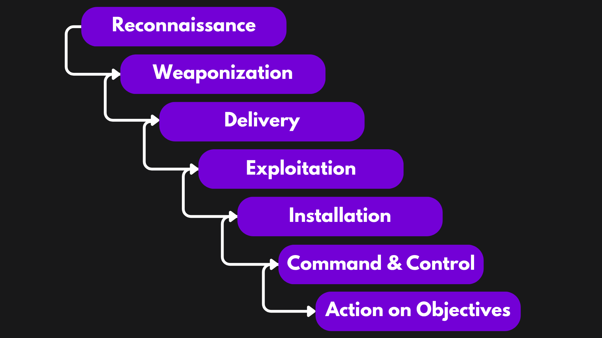

Hacking
Computers and networks can have several weaknesses or vulnerabilities. The act of exploiting these
vulnerabilities is
called hacking. For example, if a computer has a weak login password, say ‘qwerty’, then the act where
someone
unauthorized logs in by guessing ‘qwerty’ is hacking and that person is hacker. Hacking can be as small
process as this,
and can be much more complex.
Hacking is the process of identifying vulnerabilities in a system and exploiting them. Generally, hacking is
referred as
being crime. But there are different types of hacking according to the motivations of the hacker.
- White hat hacker: White hat hackers or ethical hackers are the cybersecurity experts with good
intention. They work to
improve security of an organization. With permission and staying under the law, they help to assess,
identify and fix
security vulnerabilities in an organization system.
- Black hat hacker: Black hat hackers are unethical hackers. They operate illegally to hack other
systems with the aim
of financial gain, revenge, political goals, etc.
- Gray hat hacker: Gray hat hackers are the hackers who may become unethical but their intention is
good. Hacktivists
may fall under this category (but not every time).
Why do hackers hack
- Financial gain: Hackers can hack different organizations to get money in various ways which can be by
directly
stealing credit card information or by deploying ransomware.
- Fun and learning: Hackers can also hack just for fun, learning or show off.
- Revenge: Hackers can hack enemy’s system for revenge purpose.
- Political gain: Political sides can also use hacking to gain benefits or advantage against another
political team.
- Competitive advantage: Businesses might hack other businesses to gain advantage in the market.
- Security improvements: White hat hackers can hack to improve security of the system.
Penetration Testing
Penetration Testing (Pen Testing) is a cybersecurity test conducted by ethical hackers in an organization to
test the
organization’s defense and find security weakness. The penetration testers would work like a hacker, trying
to find the
vulnerabilities in the organization IT environment. The tester would report the vulnerability and the
organization would
then fix it with proper measures.
There are three types of penetration testing:
- White box testing: In white box testing, the tester has knowledge of the source code of
application and other
information.
- Black box testing: In black box testing, the tester has no such knowledge.
- Gray box testing: In gray box testing, the tester has partial knowledge of the system they are
testing on.
Vulnerability Assessment
Vulnerability Assessment is the systematic process of identifying, analyzing and prioritizing vulnerabilities
in a
system. Vulnerability Assessment is related to finding weakness in a system while Penetration Testing would
also
exploit it
to test how impactful it would be.
Purpose of Penetration Testing and Vulnerability Assessment
- Identify vulnerabilities (weakness in the system)
- Evaluate risks that the vulnerabilities can bring
- Analyze the impacts if such vulnerabilities are exploited
- Mitigate such risks
- Evaluate the security controls of the organization
Cyber Kill Chain
The cyber kill chain is the framework that includes the steps that a hacker follows to carry out a
cyberattack. It is
helpful for the cybersecurity team to understand the mindset of hackers and prevent cyberattacks.
There are seven stages in a kill chain:

- Reconnaissance: Reconnaissance is the process of gathering information. It is the first phase
carried
out in any
cyber-attack. The attacker finds the target and understands its characteristics.
- Weaponization: Weaponization is the process of creating malicious payloads, such as malware and
ransomware, and
embedding them in files and scripts. The file is then executed in the target computer.
- Delivery: The delivery phase involves injecting the weapon built in the weaponization phase into
the
target system.
Generally, the malicious payload is injected via USB, phishing email, Drive-by-download, etc. Typically,
malware will
self-install when an infected item is opened.
- Exploitation: Exploitation phase involves the attacker exploiting the vulnerability in the target
system.
- Installation: In the installation phase, the malware gets installed into the memory or hard
drive. The
main goal in this
phase is to achieve persistence.
- Command and Control: In the Command-and-Control phase, the attacker aims to control the target
system.
They generally
use C2 servers to connect to the compromised system and command the system, stealing data or deploying
additional
malware.
- Action on Objectives: The Actions on Objectives highlights the approach that the adversary took
to
achieve the goal. It
points out the motive of the attacker.
Prevention against hacking
- Use strong passwords and multi-factor authentication to secure your accounts and devices.
- Do not click on links and submit forms without proper inspection and verification.
- Keep application and software up to date.
- Do not visit insecure websites.
- Do not download pirated files.
- Do not access personal or financial data (example – share banking credentials) through public WIFI.
- Use antimalware software.